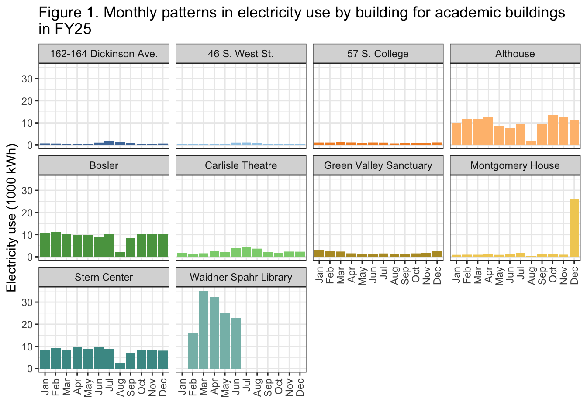
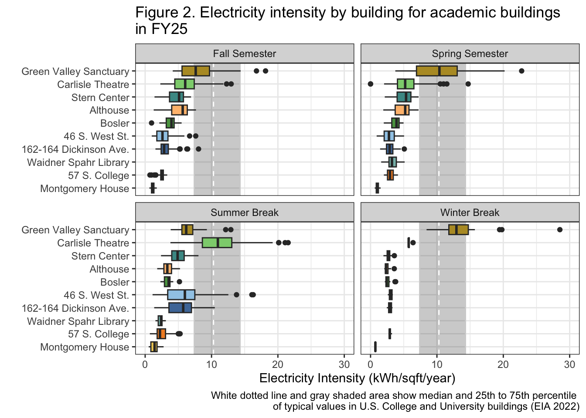

Last updated: 2026-03-30
Checks: 6 1
Knit directory: dickinson_power/
This reproducible R Markdown analysis was created with workflowr (version 1.7.2). The Checks tab describes the reproducibility checks that were applied when the results were created. The Past versions tab lists the development history.
The R Markdown file has unstaged changes. To know which version of
the R Markdown file created these results, you’ll want to first commit
it to the Git repo. If you’re still working on the analysis, you can
ignore this warning. When you’re finished, you can run
wflow_publish to commit the R Markdown file and build the
HTML.
Great job! The global environment was empty. Objects defined in the global environment can affect the analysis in your R Markdown file in unknown ways. For reproduciblity it’s best to always run the code in an empty environment.
The command set.seed(20260107) was run prior to running
the code in the R Markdown file. Setting a seed ensures that any results
that rely on randomness, e.g. subsampling or permutations, are
reproducible.
Great job! Recording the operating system, R version, and package versions is critical for reproducibility.
Nice! There were no cached chunks for this analysis, so you can be confident that you successfully produced the results during this run.
Great job! Using relative paths to the files within your workflowr project makes it easier to run your code on other machines.
Great! You are using Git for version control. Tracking code development and connecting the code version to the results is critical for reproducibility.
The results in this page were generated with repository version 10db689. See the Past versions tab to see a history of the changes made to the R Markdown and HTML files.
Note that you need to be careful to ensure that all relevant files for
the analysis have been committed to Git prior to generating the results
(you can use wflow_publish or
wflow_git_commit). workflowr only checks the R Markdown
file, but you know if there are other scripts or data files that it
depends on. Below is the status of the Git repository when the results
were generated:
Ignored files:
Ignored: .DS_Store
Ignored: .Rhistory
Ignored: .Rproj.user/
Ignored: analysis/.DS_Store
Ignored: analysis/.Rhistory
Ignored: analysis_to-fix/.DS_Store
Ignored: data/.DS_Store
Ignored: data/FY25 Main Meter Data.xlsx
Ignored: data/building_list_FY25_updated.xlsx
Ignored: data/graph_data_life_exp.csv
Ignored: data/housing_counts.csv
Ignored: keys/.DS_Store
Ignored: output/annual_kwh.csv
Ignored: output/building_check.csv
Ignored: output/building_check.xlsx
Ignored: output/daily_kwh.csv
Ignored: output/kwh_academic_2026-03-16.csv
Ignored: output/kwh_academic_2026-03-17.csv
Ignored: output/kwh_academic_2026-03-18.csv
Ignored: output/kwh_academic_2026-03-22.csv
Ignored: output/kwh_academic_2026-03-23.csv
Ignored: output/kwh_academic_2026-03-25.csv
Ignored: output/kwh_academic_2026-03-30.csv
Ignored: output/kwh_annual.csv
Ignored: output/kwh_annual_2026-03-04.csv
Ignored: output/kwh_annual_2026-03-12.csv
Ignored: output/kwh_annual_2026-03-16.csv
Ignored: output/kwh_annual_2026-03-17.csv
Ignored: output/kwh_annual_2026-03-18.csv
Ignored: output/kwh_annual_2026-03-22.csv
Ignored: output/kwh_annual_2026-03-23.csv
Ignored: output/kwh_annual_2026-03-25.csv
Ignored: output/kwh_annual_2026-03-30.csv
Ignored: output/kwh_annual_20260225.csv
Ignored: output/kwh_annual_20260226.csv
Ignored: output/kwh_daily.csv
Ignored: output/kwh_daily_2026-03-04.csv
Ignored: output/kwh_daily_2026-03-12.csv
Ignored: output/kwh_daily_2026-03-16.csv
Ignored: output/kwh_daily_2026-03-17.csv
Ignored: output/kwh_daily_2026-03-18.csv
Ignored: output/kwh_daily_2026-03-22.csv
Ignored: output/kwh_daily_2026-03-23.csv
Ignored: output/kwh_daily_2026-03-25.csv
Ignored: output/kwh_daily_2026-03-30.csv
Ignored: output/kwh_daily_20260225.csv
Ignored: output/kwh_daily_20260226.csv
Ignored: output/kwh_main_annual.csv
Ignored: output/kwh_main_daily.csv
Unstaged changes:
Modified: analysis/Report_I_Academic.Rmd
Modified: analysis/_site.yml
Modified: analysis/main_meter_anova.Rmd
Modified: analysis/main_meter_regression.Rmd
Note that any generated files, e.g. HTML, png, CSS, etc., are not included in this status report because it is ok for generated content to have uncommitted changes.
These are the previous versions of the repository in which changes were
made to the R Markdown (analysis/Report_I_Academic.Rmd) and
HTML (docs/Report_I_Academic.html) files. If you’ve
configured a remote Git repository (see ?wflow_git_remote),
click on the hyperlinks in the table below to view the files as they
were in that past version.
| File | Version | Author | Date | Message |
|---|---|---|---|---|
| Rmd | 10db689 | maggiedouglas | 2026-03-30 | change navigation bar and add student report sections |
The buildings in the academic category primarily hold classrooms, laboratories, offices and study spaces. They are primarily used by students and faculty during the day on weekdays. Many of the buildings are still used by a smaller number of people at nights and on weekends. The buildings in this category cover 517,099 sqft on campus which is about 27% of building space. These buildings have a wide range of square footage. The largest building is the Waidner Spahr Library with 120,000 sqft and the smallest is the Keck Archaeology lab with 1,511 sqft. This category also has significant variability in age, from 19 years to 199 years old.
This category contains 20 buildings however only half of these have individual data. Five academic buildings are metered individually, and 5 are on the main meter but have submeter data. The rest are on the main meter but do not have submeter data. This presents a significant challenge to understanding the electricity use of academic buildings on campus. The following analysis is conducted only on the ten buildings with individual daily data.
For the academic buildings the total annual electricity consumption is highly variable by building. During fiscal year 2025, the median annual corrected electricity consumption for academic buildings is 34,465 kWh with an interquartile range of 103,559 kWh. These buildings also have significant variability in electricity cost and GHG emissions. The estimated cost of electricity per building in fiscal year 2025 ranges from $528 to $29,356. Similarly, the estimated GHG emissions ranges from 1,953 MT CO2e to 108,510 MT CO2e. This variability is not unexpected considering the range of sizes that this category covers. The square footage ranges from 1,775 sqft to 120,000 sqft (Table 1).However, electricity intensity is less variable. The median annual electricity intensity is 3.7 kWh/sqft and the interquartile range is only 1.1 kWh/sqft.
datatable(annual_academic,
filter = 'none',
colnames = c("Meter", "Building", "Days of data (%)", "Square footage", "kWh", "kWh (corrected)","kWh per sqft", "Cost ($)", "CO2e (MT)"),
rownames = FALSE,
class = "compact",
options = list(pagelength = 10, autoWidth = TRUE, dom = 't'),
caption = "Table 1. Total electricity use, estimated financial cost, and estimated greenhouse gas emissions of academic buildings during fiscal year 2025")The academic buildings are used differently throughout the year. During breaks, the academic buildings see less use while most of the student body is away from campus and classes are not in session. Thus, it is useful to examine the data excluding breaks to better characterize electricity use during the academic year. Table 2 shows electricity consumption by building during the academic year 2024-2025. Both electricity consumption and electricity intensity are lower during only the academic year and there is still significant variability between buildings.
datatable(ayear_academic,
filter = 'none',
colnames = c("Meter", "Building", "Days of data (%)", "Square footage", "kWh", "kWh (corrected)","kWh per sqft", "Cost ($)", "CO2e (MT)"),
rownames = FALSE,
class = "compact",
options = list(pagelength = 10, autoWidth = TRUE, dom = 't'),
caption = "Table 2. Total electricity use, estimated financial cost, and estimated greenhouse gas emissions of academic buildings during academic year 2024/2025")The largest electricity users among Dickinson’s academic buildings are Waidner-Spahr Library, Althouse, Bosler Hall, and the Stern Center, which consistently show the highest total monthly electricity consumption, particularly during the academic year (Figure 1). Buildings such as 46 S. West St., 162–164 Dickinson Ave. and 57 S. College St. are the smallest electricity users overall, with consistently low consumption across all months (Figure 1). There is substantial variability in electricity use both across buildings and across seasons. Larger, high-use buildings maintain relatively high consumption year-round but often show slight decreases during summer or winter breaks. Other buildings, such as Montgomery House, exhibit extreme variability, with a sharp spike in December that is inconsistent with the rest of the year (Figure 1).
ggplot(academic_kwh_daily, aes(x = month, y = kwh/(10^3), fill = NAME)) +
geom_col(position = "stack") +
facet_wrap(. ~ NAME) +
scale_fill_paletteer_d("ggthemes::Tableau_20") +
theme_bw() +
theme(axis.text.x = element_text(angle = 90, vjust = 0.5, hjust = 1)) +
theme(legend.position = "none") +
labs(x = "",
y = "Electricity use (1000 kWh)",
title = "Figure 1. Monthly patterns in electricity use by building for academic buildings \nin FY25")Warning: Removed 348 rows containing missing values or values outside the scale range
(`geom_col()`).
The buildings with the highest energy use relative to their size are Green Valley Sanctuary and Carlisle Theatre, which consistently fall at or above the upper range of typical values across multiple seasons (Figure 2). These buildings are the largest users when normalized by square footage, particularly during the academic year (fall and spring semesters). Montgomery House and 57 S. College St. are among the lowest-intensity buildings across all seasons, suggesting relatively low energy use per square foot (Figure 2). Most other academic buildings, including Althouse, Bosler Hall, Stern Center, and Waidner-Spahr Library, fall within a moderate range of electricity intensity, generally below the national median (Figure 2). There is notable variability in electricity intensity across both buildings and seasons. Some buildings, such as the Carlisle Theatre, show a wide spread of values, particularly during the summer (Figure 2). Others, like Green Valley Sanctuary, maintain consistently high intensity across all periods (Figure 2). Seasonal variation is also evident, with many buildings showing slightly lower intensity during summer and winter breaks, although this pattern is not uniform across all buildings. When compared to the EIA 2018 Commercial Buildings Energy Consumption Survey, most Dickinson academic buildings fall below the national median and within or below the interquartile range, indicating generally strong performance with the exception of Green Valley Sanctuary and Carlisle Theatre having the highest electricity intensities across multiple seasons (Figure 2), often approaching or exceeding the upper range of typical values for U.S. colleges and universities.
ggplot(academic_kwh_daily, aes(fct_reorder(NAME, kwh_sqft, median), y = kwh_sqft,
fill = NAME)) +
annotate("rect", xmin = -Inf, xmax = Inf, ymin = 7.4, ymax = 14.3, color = "lightgray", alpha = 0.3) +
geom_hline(yintercept = 10.3, linetype = "dashed", color = "white") +
geom_boxplot() +
facet_wrap(. ~ period) +
coord_flip() +
theme_bw() +
theme(legend.position = "none") +
scale_fill_paletteer_d("ggthemes::Tableau_20") +
labs(x = "",
y = "Electricity Intensity (kWh/sqft/year)",
title = "Figure 2. Electricity intensity by building for academic buildings \nin FY25",
caption = "White dotted line and gray shaded area show median and 25th to 75th percentile \nof typical values in U.S. College and University buildings (EIA 2022)") +
ylim(0,30) # Montogomery House as an outlier of 800Warning: `fct_reorder()` removing 348 missing values.
ℹ Use `.na_rm = TRUE` to silence this message.
ℹ Use `.na_rm = FALSE` to preserve NAs.Warning: Removed 349 rows containing non-finite outside the scale range
(`stat_boxplot()`).
A limitation in this study is the inconsistency in submeter data
availability across academic buildings. As shown in Tables 1 and 2,
several buildings do not have complete daily records due to meters going
offline, which can result in unrecorded electricity use being aggregated
into later days when the meter goes back online. To improve data
quality, Dickinson should prioritize upgrading or replacing submeters in
buildings with significant data gaps, particularly Waidner-Spahr
Library, which has only 36% of days with electricity data despite being
heavily used throughout the academic year (Table 1). Montgomery House is
another building we recommend looking into because it exhibits an
extreme outlier in electricity intensity (approximately 800
kWh/sqft/year) and unusually high electricity use just in the month of
December (Figure 1). This pattern may reflect submeter problems or
delayed reporting of electricity use due to going offline, but it could
also indicate underlying issues.
When compared to the U.S. Energy Information Administration’s 2018 Commercial Buildings Energy Consumption Survey, most of Dickinson’s academic buildings perform well, with electricity intensities below the national median during both academic semesters and break periods. However, exceptions such as Carlisle Theatre and Green Valley Sanctuary meet or exceed the EIA median (Figure 2), suggesting potential problems or different electricity demands that should be further examined. Dickinson’s academic buildings are functioning well and are showing a generally strong performance compared to the college and university section in the EIA building survey, variation between buildings suggests there are still opportunities to improve efficiency. Several buildings (Althouse, Bosler Hall, Stern Center, and Waidner-Spahr Library) consistently show higher electricity use than others, particularly during the fall, winter, and spring months (Figure 1). These buildings should be prioritized to see what could possibly be causing these electricity inefficiencies. Buildings with consistently low electricity intensity relative to other buildings may serve as useful models, and analyzing their operational practices could help inform electricity-saving strategies across campus.
Energy Information Administration (EIA). (2022). 2018 Commercial Buildings Energy Consumption Survey (CBECS). https://www.eia.gov/consumption/commercial/
Leary, N. (2025). Dickinson College Greenhouse Gas Inventory 2008-2023. Center for Sustainability Education.
Sophia wrote the background, generated the tables and wrote the associated text. Chloe wrote the reccomendations, generated the figures and wrote the associated text.
sessionInfo()R version 4.5.2 (2025-10-31)
Platform: x86_64-apple-darwin20
Running under: macOS Ventura 13.7.8
Matrix products: default
BLAS: /Library/Frameworks/R.framework/Versions/4.5-x86_64/Resources/lib/libRblas.0.dylib
LAPACK: /Library/Frameworks/R.framework/Versions/4.5-x86_64/Resources/lib/libRlapack.dylib; LAPACK version 3.12.1
locale:
[1] en_US.UTF-8/en_US.UTF-8/en_US.UTF-8/C/en_US.UTF-8/en_US.UTF-8
time zone: America/New_York
tzcode source: internal
attached base packages:
[1] stats graphics grDevices utils datasets methods base
other attached packages:
[1] paletteer_1.7.0 DT_0.34.0 lubridate_1.9.5 forcats_1.0.1
[5] stringr_1.6.0 dplyr_1.2.0 purrr_1.2.1 readr_2.2.0
[9] tidyr_1.3.2 tibble_3.3.1 ggplot2_4.0.2 tidyverse_2.0.0
loaded via a namespace (and not attached):
[1] sass_0.4.10 generics_0.1.4 prismatic_1.1.2 stringi_1.8.7
[5] hms_1.1.4 digest_0.6.39 magrittr_2.0.4 timechange_0.4.0
[9] evaluate_1.0.5 grid_4.5.2 RColorBrewer_1.1-3 fastmap_1.2.0
[13] rprojroot_2.1.1 workflowr_1.7.2 jsonlite_2.0.0 whisker_0.4.1
[17] rematch2_2.1.2 promises_1.5.0 crosstalk_1.2.2 scales_1.4.0
[21] jquerylib_0.1.4 cli_3.6.5 rlang_1.1.7 withr_3.0.2
[25] cachem_1.1.0 yaml_2.3.12 otel_0.2.0 tools_4.5.2
[29] tzdb_0.5.0 httpuv_1.6.16 vctrs_0.7.1 R6_2.6.1
[33] lifecycle_1.0.5 git2r_0.36.2 htmlwidgets_1.6.4 fs_1.6.7
[37] pkgconfig_2.0.3 pillar_1.11.1 bslib_0.10.0 later_1.4.8
[41] gtable_0.3.6 glue_1.8.0 Rcpp_1.1.1 xfun_0.56
[45] tidyselect_1.2.1 rstudioapi_0.18.0 knitr_1.51 farver_2.1.2
[49] htmltools_0.5.9 labeling_0.4.3 rmarkdown_2.30 compiler_4.5.2
[53] S7_0.2.1